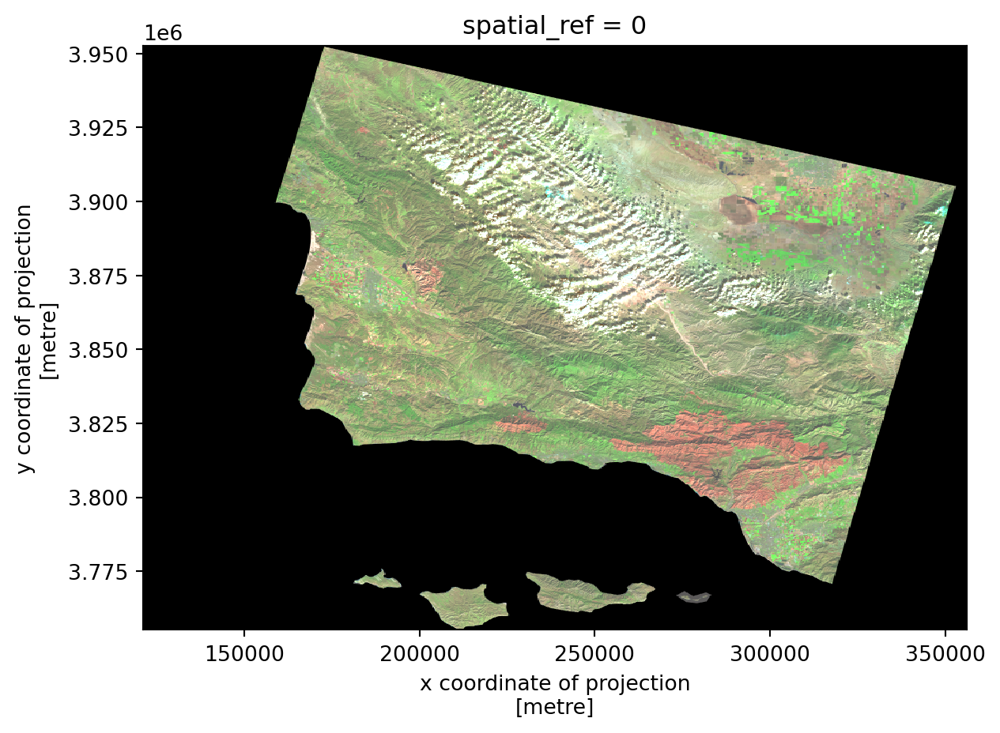

# Import libraries
import pandas as pd
import matplotlib.pyplot as plt
# Read in AQI data for both years
aqi_17 = pd.read_csv('https://aqs.epa.gov/aqsweb/airdata/daily_aqi_by_county_2017.zip',
compression = 'zip')
aqi_18 = pd.read_csv('https://aqs.epa.gov/aqsweb/airdata/daily_aqi_by_county_2018.zip',
compression = 'zip')
Image credits: LA Daily News
Author: Haylee Oyler
This
Part 1: Visualizing AQI during the 2017 Thomas Fire in Santa Barbara County
About
Purpose
Part one of this analysis explores the change in air quality in Santa Barbara county during the 2017 Thomas Fire. The Thomas Fire was one of the regions largest fires to date, burning over 280,000 acres in Ventura and Santa Barbara counties in December 2017. It caused widespread ecological damage, displaced communities, and left lasting environmental impacts. Additionally, wildfire smoke is a strong trigger for respiratory diseases such as asthma. One way to measure wildfire’s environmental health effects is through air quality.
The air quality index (AQI) is a measure of how clean or polluted the air is and what associated health effects might be a concern cite. It is a scale that ranges from 0-500 with 0-50 being good, 151-200 being unhealth, and 301-500 being hazardous.
Part 1 will using AQI data to the explore the Thomas Fire’s effects on air quality and environmental health in Santa Barbara County.
Highlights
- Import AQI data using
pandas - Explore and clean AQI data using
pandas - Filter AQI data to Santa Barbara county during the Thomas Fire using
pandas - Calculate a rolling 5 day average AQI using
pandas - Visualize the AQI over time during the Thomas Fire using
matplotlib
About the Data
This analysis uses data from the Air Quality Index Daily Values Report which provides daily AQI values for a specified year and location. We’re working with two datasets daily_aqi_by_county_2017 and daily_aqi_by_county_2018. These contain daily aqi values for U.S. counties in 2017 and 2018 respectively. The Thomas Fire occurred in December of 2017, so we’ve selected data before and after the fire to see a clear picture of its effect on air quality.
References
Air Quality Index (AQI) from US Environmental Protection Agency.
- US Environmental Protection Agency. Air Quality System Data Mart AirNow available via https://www.epa.gov/outdoor-air-quality-data. Accessed October 17 2024.
Acknowledgements
All materials were created by Carmen Galaz-Garcia for EDS-220: Working with Environmental Data.
Import AQI data and explore
# View the first five rows of aqi 2017
aqi_17.head()| State Name | county Name | State Code | County Code | Date | AQI | Category | Defining Parameter | Defining Site | Number of Sites Reporting | |
|---|---|---|---|---|---|---|---|---|---|---|
| 0 | Alabama | Baldwin | 1 | 3 | 2017-01-01 | 28 | Good | PM2.5 | 01-003-0010 | 1 |
| 1 | Alabama | Baldwin | 1 | 3 | 2017-01-04 | 29 | Good | PM2.5 | 01-003-0010 | 1 |
| 2 | Alabama | Baldwin | 1 | 3 | 2017-01-10 | 25 | Good | PM2.5 | 01-003-0010 | 1 |
| 3 | Alabama | Baldwin | 1 | 3 | 2017-01-13 | 40 | Good | PM2.5 | 01-003-0010 | 1 |
| 4 | Alabama | Baldwin | 1 | 3 | 2017-01-16 | 22 | Good | PM2.5 | 01-003-0010 | 1 |
# View the first five rows of aqi 2018
aqi_18.head()| State Name | county Name | State Code | County Code | Date | AQI | Category | Defining Parameter | Defining Site | Number of Sites Reporting | |
|---|---|---|---|---|---|---|---|---|---|---|
| 0 | Alabama | Baldwin | 1 | 3 | 2018-01-02 | 42 | Good | PM2.5 | 01-003-0010 | 1 |
| 1 | Alabama | Baldwin | 1 | 3 | 2018-01-05 | 45 | Good | PM2.5 | 01-003-0010 | 1 |
| 2 | Alabama | Baldwin | 1 | 3 | 2018-01-08 | 20 | Good | PM2.5 | 01-003-0010 | 1 |
| 3 | Alabama | Baldwin | 1 | 3 | 2018-01-11 | 25 | Good | PM2.5 | 01-003-0010 | 1 |
| 4 | Alabama | Baldwin | 1 | 3 | 2018-01-14 | 33 | Good | PM2.5 | 01-003-0010 | 1 |
# View the info of both data frames
print(aqi_17.info())
print(aqi_18.info())<class 'pandas.core.frame.DataFrame'>
RangeIndex: 326801 entries, 0 to 326800
Data columns (total 10 columns):
# Column Non-Null Count Dtype
--- ------ -------------- -----
0 State Name 326801 non-null object
1 county Name 326801 non-null object
2 State Code 326801 non-null int64
3 County Code 326801 non-null int64
4 Date 326801 non-null object
5 AQI 326801 non-null int64
6 Category 326801 non-null object
7 Defining Parameter 326801 non-null object
8 Defining Site 326801 non-null object
9 Number of Sites Reporting 326801 non-null int64
dtypes: int64(4), object(6)
memory usage: 24.9+ MB
None
<class 'pandas.core.frame.DataFrame'>
RangeIndex: 327541 entries, 0 to 327540
Data columns (total 10 columns):
# Column Non-Null Count Dtype
--- ------ -------------- -----
0 State Name 327541 non-null object
1 county Name 327541 non-null object
2 State Code 327541 non-null int64
3 County Code 327541 non-null int64
4 Date 327541 non-null object
5 AQI 327541 non-null int64
6 Category 327541 non-null object
7 Defining Parameter 327541 non-null object
8 Defining Site 327541 non-null object
9 Number of Sites Reporting 327541 non-null int64
dtypes: int64(4), object(6)
memory usage: 25.0+ MB
NoneDESCRIBE DATA HERE
Clean the AQI data
Currently, our AQI data is housed in two separate data frames. We will join them together using the pandas function pd.concat() and save them as one data frame named aqi.
NOTE: When we concatenate data frames without any extra parameters specified in pd.concat(), the indices are simply stacked on top of one another. Therefore, the resuling index values of aqi will not match the length of the new data frame.
# Bind 2017 and 2018 AQI data together
aqi = pd.concat([aqi_17, aqi_18])
aqi| State Name | county Name | State Code | County Code | Date | AQI | Category | Defining Parameter | Defining Site | Number of Sites Reporting | |
|---|---|---|---|---|---|---|---|---|---|---|
| 0 | Alabama | Baldwin | 1 | 3 | 2017-01-01 | 28 | Good | PM2.5 | 01-003-0010 | 1 |
| 1 | Alabama | Baldwin | 1 | 3 | 2017-01-04 | 29 | Good | PM2.5 | 01-003-0010 | 1 |
| 2 | Alabama | Baldwin | 1 | 3 | 2017-01-10 | 25 | Good | PM2.5 | 01-003-0010 | 1 |
| 3 | Alabama | Baldwin | 1 | 3 | 2017-01-13 | 40 | Good | PM2.5 | 01-003-0010 | 1 |
| 4 | Alabama | Baldwin | 1 | 3 | 2017-01-16 | 22 | Good | PM2.5 | 01-003-0010 | 1 |
| ... | ... | ... | ... | ... | ... | ... | ... | ... | ... | ... |
| 327536 | Wyoming | Weston | 56 | 45 | 2018-12-27 | 36 | Good | Ozone | 56-045-0003 | 1 |
| 327537 | Wyoming | Weston | 56 | 45 | 2018-12-28 | 35 | Good | Ozone | 56-045-0003 | 1 |
| 327538 | Wyoming | Weston | 56 | 45 | 2018-12-29 | 35 | Good | Ozone | 56-045-0003 | 1 |
| 327539 | Wyoming | Weston | 56 | 45 | 2018-12-30 | 31 | Good | Ozone | 56-045-0003 | 1 |
| 327540 | Wyoming | Weston | 56 | 45 | 2018-12-31 | 35 | Good | Ozone | 56-045-0003 | 1 |
654342 rows × 10 columns
To address our confusing index, we will change the index of our data frame to the date column.
First, we will ensure that our Date column is a pandas datetime object. Then, we will set our index to the Date column.
# Convert date to a datetime object
aqi.Date = pd.to_datetime(aqi.Date)
# Set the index to our datetime to make visualizing easier later on
aqi = aqi.set_index('Date')
aqi.head(3)| State Name | county Name | State Code | County Code | AQI | Category | Defining Parameter | Defining Site | Number of Sites Reporting | |
|---|---|---|---|---|---|---|---|---|---|
| Date | |||||||||
| 2017-01-01 | Alabama | Baldwin | 1 | 3 | 28 | Good | PM2.5 | 01-003-0010 | 1 |
| 2017-01-04 | Alabama | Baldwin | 1 | 3 | 29 | Good | PM2.5 | 01-003-0010 | 1 |
| 2017-01-10 | Alabama | Baldwin | 1 | 3 | 25 | Good | PM2.5 | 01-003-0010 | 1 |
| 2017-01-13 | Alabama | Baldwin | 1 | 3 | 40 | Good | PM2.5 | 01-003-0010 | 1 |
| 2017-01-16 | Alabama | Baldwin | 1 | 3 | 22 | Good | PM2.5 | 01-003-0010 | 1 |
| ... | ... | ... | ... | ... | ... | ... | ... | ... | ... |
| 2018-12-27 | Wyoming | Weston | 56 | 45 | 36 | Good | Ozone | 56-045-0003 | 1 |
| 2018-12-28 | Wyoming | Weston | 56 | 45 | 35 | Good | Ozone | 56-045-0003 | 1 |
| 2018-12-29 | Wyoming | Weston | 56 | 45 | 35 | Good | Ozone | 56-045-0003 | 1 |
| 2018-12-30 | Wyoming | Weston | 56 | 45 | 31 | Good | Ozone | 56-045-0003 | 1 |
| 2018-12-31 | Wyoming | Weston | 56 | 45 | 35 | Good | Ozone | 56-045-0003 | 1 |
654342 rows × 9 columns
Next, we will clean the column names of our new data frame. We will make all the column names lower snake case via the operations below. Here is a step-by-step of what the functions do:
aqi.columns = (aqi.columnsselects the columns from theaqidata frame and reassigns them to the original data frame.str.lower()uses the string operator to make all the letters lower case.str.replace(' ','_')converts the output of the lower case columns to a string and replaces all spaces with an underscore)closes the method chainingprint(aqi.columns, '\n')lets us view the output of our modified column names
# Initial column names: notice caps and spaces (difficult to work with!)
print(aqi.columns, '\n')
# Simplify column names
aqi.columns = (aqi.columns
.str.lower()
.str.replace(' ','_')
)
print(aqi.columns, '\n')Index(['State Name', 'county Name', 'State Code', 'County Code', 'AQI',
'Category', 'Defining Parameter', 'Defining Site',
'Number of Sites Reporting'],
dtype='object')
Index(['state_name', 'county_name', 'state_code', 'county_code', 'aqi',
'category', 'defining_parameter', 'defining_site',
'number_of_sites_reporting'],
dtype='object')
Filter AQI data
# Filter data to Santa Barbara county
aqi_sb = aqi[aqi['county_name'] == 'Santa Barbara']
# Drop the columns we're not interested in working with
aqi_sb = aqi_sb.drop(['state_name', 'county_name', 'state_code', 'county_code'], axis=1)
aqi_sb.head(3)| date | aqi | category | defining_parameter | defining_site | number_of_sites_reporting | |
|---|---|---|---|---|---|---|
| 28648 | 2017-01-01 | 39 | Good | Ozone | 06-083-4003 | 12 |
| 28649 | 2017-01-02 | 39 | Good | PM2.5 | 06-083-2011 | 11 |
| 28650 | 2017-01-03 | 71 | Moderate | PM10 | 06-083-4003 | 12 |
| 28651 | 2017-01-04 | 34 | Good | Ozone | 06-083-4003 | 13 |
| 28652 | 2017-01-05 | 37 | Good | Ozone | 06-083-4003 | 12 |
| ... | ... | ... | ... | ... | ... | ... |
| 29128 | 2018-12-27 | 37 | Good | Ozone | 06-083-1025 | 11 |
| 29129 | 2018-12-28 | 39 | Good | Ozone | 06-083-1021 | 12 |
| 29130 | 2018-12-29 | 39 | Good | Ozone | 06-083-1021 | 12 |
| 29131 | 2018-12-30 | 41 | Good | PM2.5 | 06-083-1008 | 12 |
| 29132 | 2018-12-31 | 38 | Good | Ozone | 06-083-2004 | 12 |
730 rows × 6 columns
AQI rolling average
In the next cell we will calculate an average over a rolling window using the rolling()method for pandas.Series:
rolling()is a lazy method, so we need to specify what we want to calculate over each window before it does something.- in this example we use the aggregator function
mean()to calculate the average over each window - the parameter ‘5D’ indicates we want the window for our rolling average to be 5 days.
- we get a
pandas.Seriesas ouput
# Calculate AQI rolling average over 5 days
rolling_average = aqi_sb['aqi'].rolling(window='5D').mean()# Append our rolling average to our original data frame
aqi_sb['five_day_average'] = rolling_averagePlot AQI during the 2017 Thomas Fire in Santa Barbara County
# Initialize an empty figure (fig) and axis (ax)
fig, ax = plt.subplots()
# Visualize air quality during the Thomas Fire
aqi_sb.aqi.plot(ax=ax, label = 'AQI') # daily aqi
aqi_sb.five_day_average.plot(ax=ax, label = "Five day AQI average") # five day average aqi
# Show the date of the Thomas fire
plt.axvline(x = '2017-12-04',
color = 'red',
linestyle = 'dashed',
label = "Thomas Fire")
# Customize the plot
ax.set_title('Daily AQI and 5-day AQI averages during the\nThomas Fire in Santa Barbara County')
ax.set_xlabel('Date')
ax.set_ylabel('AQI')
ax.legend()
# Display the figure
plt.show()
Part 2: False Color Imagery of the 2017 Thomas Fire
About
Purpose
Part 2 of this analysis details the steps to visualize landsat multispectral geospatial data for the 2017 Thomas Fire. The Thomas Fire, which burned over 280,000 acres in Ventura and Santa Barbara counties in December 2017, was one of California’s largest wildfires at the time. It caused widespread ecological damage, displaced communities, and left lasting environmental impacts.
False color imagery, created using satellite data from instruments like Landsat, is a useful tool for monitoring wildfire impacts. By assigning infrared bands to visible colors, these images highlight vegetation health, burn severity, and the extent of fire scars. This approach helps researchers and land managers assess recovery efforts, identify high-risk areas, and plan restoration strategies.
Part 2 will create a false color image of the Thomas Fire using remote sensing data, highlighting the fire scar and exploring how coding and data visualization support environmental monitoring.
Highlights
- Import thomas fire perimeter data with
geopandasandos - Import landsat data with
rioxarrayandos - Explore and clean geospatial data with
pandasandrioxarray - Construct a true color image of the Thomas Fire with
matplotlib - Construct a false color image of the Thomas Fire with
matplotlib - Visualize the Thomas Fire false color scar with the fire perimeter data using
matplotlib
About the Data
The landsat data is a simplified collection of bands (red, green, blue, near-infrared and shortwave infrared) from the Landsat Collection 2 Level-2 atmosperically corrected surface reflectance data, collected by the Landsat 8 satellite. It was pre-processed in the Microsoft Planetary data catalogue to remove data outside land and coarsen the spatial resolution
The Thomas Fire perimeter data comes from CalFire’s data portal. CalFire is the department of forestry and fire protection. They have a Geodatabase of all historical fire perimeters in the state of California from 1878 until present. The database includes information on the fire date, managing agency, cause, acres, and the geospatial boundary of the fire, among other information. This data was pre-processed to select only the thomas fire boundary geometry.
References
Landsat Data from Microsoft’s Planetary Computer Data Catalogue.
- Earth Resources Observation and Science (EROS) Center. (2020). Landsat 4-5 Thematic Mapper Level-2, Collection 2. U.S. Geological Survey. https://doi.org/10.5066/P9IAXOVV
- Earth Resources Observation and Science (EROS) Center. (2020). Landsat 7 Enhanced Thematic Mapper Plus Level-2, Collection 2. U.S. Geological Survey. https://doi.org/10.5066/P9C7I13B
- Earth Resources Observation and Science (EROS) Center. (2020). Landsat 8-9 Operational Land Imager / Thermal Infrared Sensor Level-2, Collection 2. U.S. Geological Survey. https://doi.org/10.5066/P9OGBGM6
-
- California Department of Forestry and Fire Protection (CAL FIRE), [calfire_all.gdb], [2024-11-17], retrieved from CAL FIRE data portal.
Acknowledgements
All materials were created by Carmen Galaz-Garcia for EDS-220: Working with Environmental Data.
Import geospatial data and explore
# Import libraries
import os
import pandas as pd
import matplotlib.pyplot as plt
import geopandas as gpd
import rioxarray as rioxr
import matplotlib.patches as mpatches # To create a custom legend
from shapely.geometry import box # To create polygon bounding box
# Change display settings to see all column names
pd.set_option("display.max.columns", None)
# Import landsat nc from data in git repo
landsat = rioxr.open_rasterio(os.path.join('data',
'landsat8-2018-01-26-sb-simplified.nc')
)
# Import fire perimeter data
thomas_boundary = gpd.read_file(os.path.join('data',
'thomas_boundary.geojson')
)# View the landsat data
landsat<xarray.Dataset> Size: 25MB
Dimensions: (band: 1, x: 870, y: 731)
Coordinates:
* band (band) int64 8B 1
* x (x) float64 7kB 1.213e+05 1.216e+05 ... 3.557e+05 3.559e+05
* y (y) float64 6kB 3.952e+06 3.952e+06 ... 3.756e+06 3.755e+06
spatial_ref int64 8B 0
Data variables:
red (band, y, x) float64 5MB ...
green (band, y, x) float64 5MB ...
blue (band, y, x) float64 5MB ...
nir08 (band, y, x) float64 5MB ...
swir22 (band, y, x) float64 5MB ...# Examine raster attributes using rio accessor
print('Height: ', landsat.rio.height)
print('Width: ', landsat.rio.width, '\n')
print('Spatial bounding box: ')
print(landsat.rio.bounds(), '\n')
print('CRS: ', landsat.rio.crs)Height: 731
Width: 870
Spatial bounding box:
(121170.0, 3755160.0, 356070.0, 3952530.0)
CRS: EPSG:32611Landsat data description
Our landsat data contains the variables red, green, blue, nir08, and swir22. These are different bands of our lansat data. The dimensions of our data for each band are an (x,y) coordinate of projection of (870, 731). The CRS is EPSG: 32611 and the height and width of the data are 731 and 870. Each variable in our dataset contains the dimensions (band, y, x).
thomas_boundary.head()| year | state | agency | unit_id | fire_name | inc_num | irwinid | alarm_date | cont_date | c_method | cause | objective | complex_name | complex_id | comments | fire_num | shape_length | shape_area | geometry | |
|---|---|---|---|---|---|---|---|---|---|---|---|---|---|---|---|---|---|---|---|
| 0 | 2017.0 | CA | USF | VNC | THOMAS | 00003583 | 2017-12-04 00:00:00+00:00 | 2018-01-12 00:00:00+00:00 | 7.0 | 9.0 | 1.0 | None | None | CONT_DATE based on Inciweb | None | 445282.444798 | 1.140367e+09 | MULTIPOLYGON (((34867.386 -396856.457, 34819.3... |
thomas_boundary.info()<class 'geopandas.geodataframe.GeoDataFrame'>
RangeIndex: 1 entries, 0 to 0
Data columns (total 19 columns):
# Column Non-Null Count Dtype
--- ------ -------------- -----
0 year 1 non-null float64
1 state 1 non-null object
2 agency 1 non-null object
3 unit_id 1 non-null object
4 fire_name 1 non-null object
5 inc_num 1 non-null object
6 irwinid 1 non-null object
7 alarm_date 1 non-null datetime64[ns, UTC]
8 cont_date 1 non-null datetime64[ns, UTC]
9 c_method 1 non-null float64
10 cause 1 non-null float64
11 objective 1 non-null float64
12 complex_name 0 non-null object
13 complex_id 0 non-null object
14 comments 1 non-null object
15 fire_num 0 non-null object
16 shape_length 1 non-null float64
17 shape_area 1 non-null float64
18 geometry 1 non-null geometry
dtypes: datetime64[ns, UTC](2), float64(6), geometry(1), object(10)
memory usage: 284.0+ bytesthomas_boundary.crs<Projected CRS: EPSG:3310>
Name: NAD83 / California Albers
Axis Info [cartesian]:
- X[east]: Easting (metre)
- Y[north]: Northing (metre)
Area of Use:
- name: United States (USA) - California.
- bounds: (-124.45, 32.53, -114.12, 42.01)
Coordinate Operation:
- name: California Albers
- method: Albers Equal Area
Datum: North American Datum 1983
- Ellipsoid: GRS 1980
- Prime Meridian: GreenwichFire perimeter data description
This fire perimeter data comes from CalFire and includes data for all fire perimeters from 1878 to 2023. It has data on the year, the fire name, the reporting agency, the cause, duration, among other data. The CRS is NAD83 California Albers and it is a projected CRS (EPSG:3310)
Clean the landsat data
# Remove the band dimension and variable
landsat = landsat.squeeze().drop_vars('band')
# Confirm it was removed correctly
landsat<xarray.Dataset> Size: 25MB
Dimensions: (x: 870, y: 731)
Coordinates:
* x (x) float64 7kB 1.213e+05 1.216e+05 ... 3.557e+05 3.559e+05
* y (y) float64 6kB 3.952e+06 3.952e+06 ... 3.756e+06 3.755e+06
spatial_ref int64 8B 0
Data variables:
red (y, x) float64 5MB ...
green (y, x) float64 5MB ...
blue (y, x) float64 5MB ...
nir08 (y, x) float64 5MB ...
swir22 (y, x) float64 5MB ...Visualize the Thomas Fire with true color imagery
# First attempt to visualize the landsat data
landsat[['red', 'green', 'blue']].to_array().plot.imshow()Clipping input data to the valid range for imshow with RGB data ([0..1] for floats or [0..255] for integers).<matplotlib.image.AxesImage at 0x17532e410>
# Visualize the landsat data using true color imagery
landsat[['red', 'green', 'blue']].to_array().plot.imshow(robust=True)<matplotlib.image.AxesImage at 0x172ee6b50>
After we adjusted the scale for plotting the bands, we got a much more comprehensible image. The clouds were throwing off the scale for plotting. The robust=True argument allows us infer a different set vmin and vmax values to properly color the image. It takes out the 2nd and 98th percentile, removing outliers which makes it easier to visualize.
Next, we will use false color imagery to view the fire…
Visualize the Thomas Fire with false color imagery
# Visualize the landsat data using false color imagery
landsat[['swir22', 'nir08', 'red']].to_array().plot.imshow(robust=True)<matplotlib.image.AxesImage at 0x1758a9c90>
Map the Thomas Fire scar and boundary
# Reproject data to match the CRS between our two datasets
thomas_boundary= thomas_boundary.to_crs("EPSG:4326")
landsat = landsat.rio.reproject("EPSG:4326")
# Confirm that the CRS of our data match
landsat.rio.crs == thomas_boundary.crsTrue# Initialize figure
fig, ax = plt.subplots(figsize=(10,10))
# Plot the landsat data
landsat[['swir22', 'nir08', 'red']].to_array().plot.imshow(ax = ax,
robust = True)
# Plot the fire perimeter
thomas_boundary.boundary.plot(ax=ax,
edgecolor='#f83c36',
linewidth=2,
label='Thomas Fire Boundary')
# Create a legend for the false color bands and boundary
legend_swir = mpatches.Patch(color = "#eb6a4b", label = 'Shortwave Infrared \n - Burned Area')
legend_nir = mpatches.Patch(color = "#a1fc81", label = 'Near Infrared \n - Vegetation')
legend_bound = mpatches.Patch(color = "#f83c36", label = 'Thomas Fire Boundary')
# Plot legend
ax.legend(handles = [legend_swir, legend_nir, legend_bound], loc = 'upper right', fontsize = 10)
# Set title and axes labels
ax.set_title('False Color Map of the 2017 Thomas Fire in California\nwith the Fire Perimeter',
fontsize=14)
ax.set_xlabel('Longitude (degrees)')
ax.set_ylabel('Latitude (degrees)')
plt.show()
Figure Description
This map shows a false color image of the Thomas Fire in Santa Barbara and Ventura Counties. The fire boundary is outlined in red. Sateillite data works with wavelengths of light beyond what the human eye can see. False color imagery is the process of assigning colors to these wavelengths (i.e. near-infared and short-wave infared). In our map, we’ve chosen to visualize short-wave infared as red, near-infared as green, and red wavelengths as blue. This lets us produce an image that highlights exactly where the fire scar is, as opposed to the true color image where you it is much harder to distinguish. A true color image assigns the red, green, and blue wavelengths of light to the correct corresponding colors.